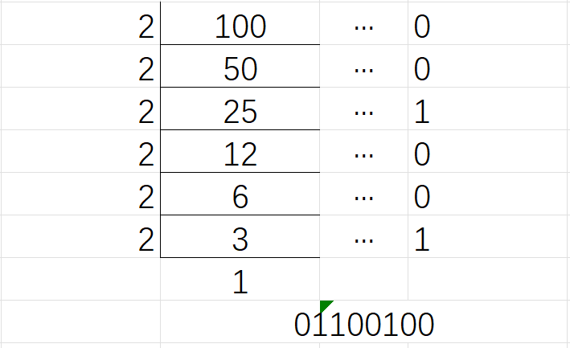
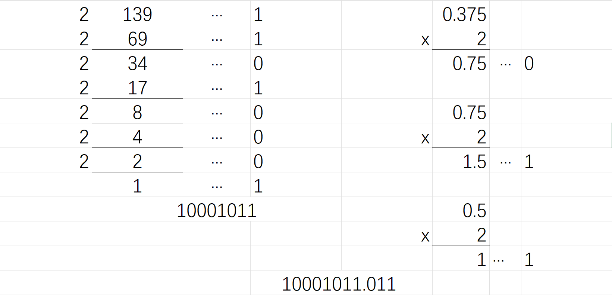
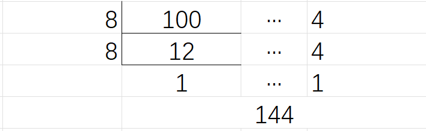
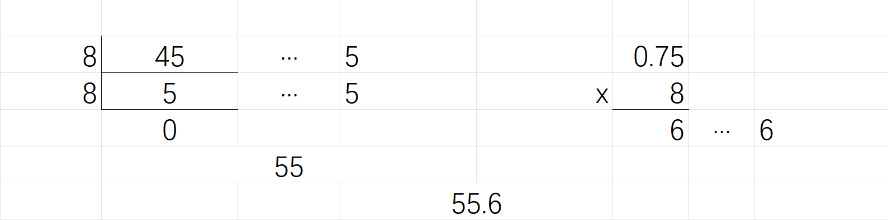
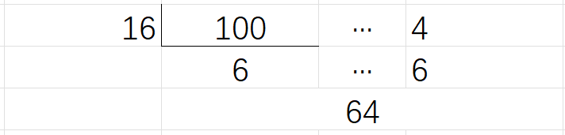
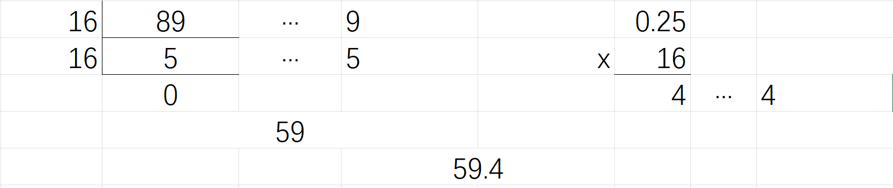
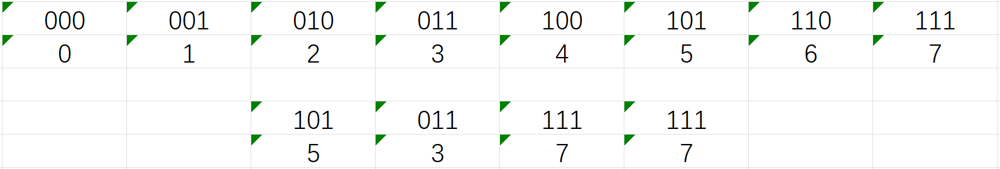
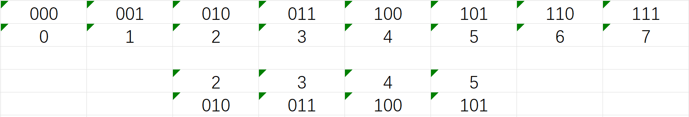
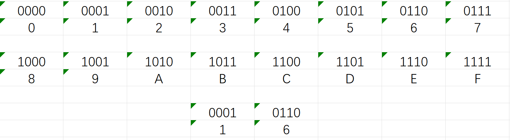
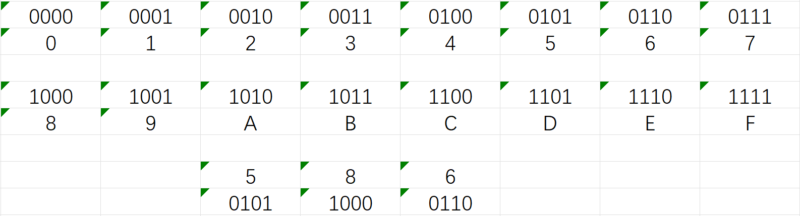

第二章 常见的数据类型、运算符、表达式、语句
考点一：
考点二：C程序中变量和常量
（三）掌握整形数据的表示方法和存储方法
补充1：原码、反码、补码的求解方式
十进制-------二进制
二进制加减：
（1）原码：十进制转成二进制表现形式就是原码，在计算机用机器数的最高位存放符号位，正数为0，负数为1。
例如：如果机器字长为8位，56的原码是0011
1000，-78的原码是1100
1110。
推导过程：
因为第一个位符号位，所以机器数的形式值就不等于真正的数值。这是机器数的真值。
例如：0000 0001的真值是+000 0001 = +1；1000 0001的真值是-000 0001 = -1；
用原码计算-56-1，结果是10110110。
推导过程：
正确推导过程：
发现了：如果使用原码表示，让符号位也参与计算，显然对于减法来说，结果是不正确的。为了解决原码做减法的问题，出现了反码。
（2）反码：正数的反码不变，和原码一致。负数的反码会在原码的基础上，高位的符号位不变，其他位取反（1变0，0变1）。
例如：如果机器字长为8位，56的反码是00111000，-78的反码是10110001。
推导过程：
用反码计算-56-1，结果是10111001。
用反码计算-5+3，结果是10000010。
推导过程：
推导过程：
计算3-5，结果是10000010。
发现了：如果使用反码计算，再转原码，可以计算出负数加正数、负数减正数的结果。
（3）补码：正数的补码是其本身，负数的补码是反码加1。
例如：如果机器字长为8位，56的补码是00111000，-78的补码是10110010。
用补码计算-5+3，结果是。
推导过程：
用反码计算-4+4，结果是10000000。
推导过程：
用补码计算-4+4,结果是00000000。
推导过程：
发现：使用补码也可以进行减法运算的问题，也解决了0的两个编码的问题。
补充2：基本整形取值范围的推导过程
补充3：进制转换
B是代表二进制
O和Q代表八进制
D代表十进制
H代表十六进制









